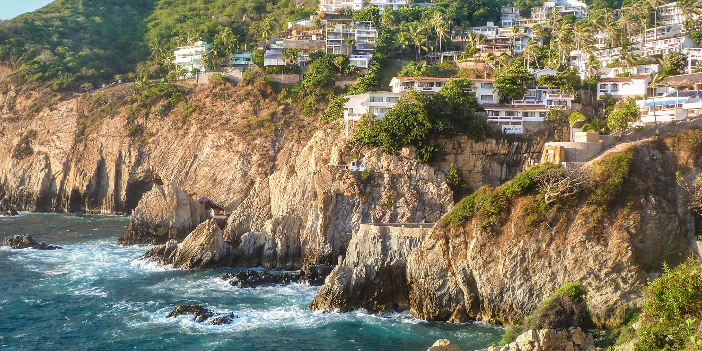

México simpre ha sido uno de los destinos turisticos favoritos; su cultura, calidad y calidez ha llamado a viajeros de todo el mundo. Ahora, gracias a las experiencias de estos viajeros, se han recopilado sus comentarios y reseñas para hacer una lista de los mejores destinos turistico de México.
En Cancún podrás encontrar aventura, fiesta, lujo, relajación y cultura, todo en un solo lugar. Ubicado en el estado de Quintana Roo, en la Península de Yucatán, en el este lo bañan las aguas turquesa del mar Caribe y por el oeste los inolvidables atardeceres de la Laguna Nichupté.
Teniendo el segundo arrecife más grande del mundo, el Sistema Arrecifal Mesoamericano, la belleza de Cancún no solo está en tierra, sino bajo el mundo submarino. En el lugar se pueden realizar todo tipo de actividades de entretenimiento: desde paracaídas hasta paseos en yate.
En este destino la diversión nunca se acaba y puedes escoger el tipo de actividad que más te plazca. Si buscas lugares para visitar en México que ofrezcan una variedad de opciones, en Cancún encontrarás zonas de relajación y aislamiento, así como playas dedicadas al festejo.
Si estás en búsqueda de una celebración masiva, la encontrarás en la capital mexicana. Con algunos de los mejores clubs del mundo, México te invita a una noche de música y baile latino llena de tentaciones.
Puedes encontrar una carta de cocteles innovadores, ritmos de todo tipo y entablar amistad con gente de todo el mundo. En la capital mexicana tendrás unas vacaciones que superarán tus expectativas.
Acapulco, famosa mundialmente no solo por su música, sino por una decoración que muchas veces evoca la playa, el mar y todo el ambiente caribeño, sigue siendo un destino elegido por miles de turistas cada año.
Y no es difícil ver el porqué: con sus lindas playas, aguas turquesas, clubes energéticos y comida de nivel mundial, reúne todos los factores que uno necesita para pasar una linda vacación.
Ubicada en el suroeste del país, Chiapas es uno de los lugares más hermosos que tiene México. Arqueólogos de todas partes del mundo la visitan no solo por su riqueza natural, sino porque ha sido cuna de leyendas e historias mágicas.
Es una zona en donde se encuentran pequeñas comunidades indígenas, como San Juan Chamula, que entrelazan sus tradiciones ricas en historia, cultura y folclor.
Las playas, como la de Puerto Arista, y los manglares hacen de este un lugar perfecto para la relajación o la aventura, dependiendo de lo que cada persona busque. Allí se encuentran las más importantes ruinas de la civilización maya, y al oriente, rumbo a la frontera con Guatemala, imponentes reservas naturales selváticas.
A una hora de Cancún se encuentra la paradisiaca Playa del Carmen. Es uno de los balnearios más lindos que tiene México y que ofrece a los turistas las mejores compras, una vida nocturna llena de música y lujo, comida fresca proveniente de la pesca artesanal y el buceo más alucinante.
Ubicada en la Rivera Maya, una joya caribeña que se extiende por la Península de Yucatán, Playa del Carmen es ideal para visitar reservas naturales y encontrarse con animales exóticos como el mono araña, los cocodrilos y pájaros de todos los colores.
Sus aguas cristalinas hacen que bucear o visitar las cuevas que se encuentran en los arrecifes sea una experiencia inolvidable. Para aquellos que no saben bucear, pueden hacer un mini curso o simplemente ponerse un esnórquel y sumergirse cerca de la playa, en donde también se ve el mundo submarino en todo su esplendor.
Caminar por el paseo peatonal en Playa del Carmen y hacer compras en las mejores boutiques es otra de las actividades que ofrece el lugar. Es un lugar de moda, aventura, relajación y elegancia.
San Luis Potosí era una zona de minería en siglos pasados y su riqueza le ha dejado un legado arquitectónico que los visitantes siguen apreciando. Su catedral y sus museos encarnan esta historia.
Pero tampoco te puedes perder sus atracciones naturales, como la Cascada de Tamul. Es verdad: No es tan grande como la del Niagara ni Iguazú, pero sigue siendo de los lugares para visitar en México más impresionantes.